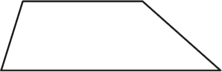
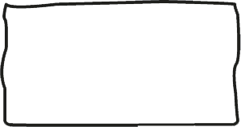
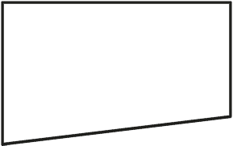
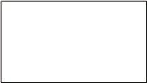
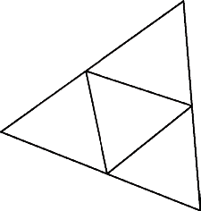
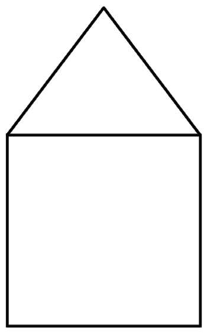

9.
Which of the following figures are not rectangular?
Give reasons for your answer:
(a)

(b)

(c)

(d)

10. How many triangles are there in the following figure?

11. Study the following diagram, and then answer the questions that follow:
